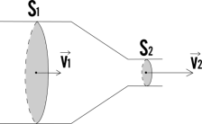

Stationary electric current
Supponiamo che in una certa regione di un conduttore ci siano n cariche per unità di volume e che in essa agisca un campo elettrico E prodotto da un generatore fi forza elettromotrice: le cariche si muovono sotto l'azione della forza elettrica F = eE, acquistando la velocità vd lungo la direzione del campo elettrico E detta velocità di deriva. Tale moto dà origine ad una corrente elettrica.
Consideriamo una superficie Σ tracciata all'interno del conduttore: detta Δq la carica che passa nel tempo Δt attraverso la superficie si definisce intensità di corrente media la grandezza
The istantaneous electric current is defined as the limit for Δt → 0
La definizione 5.1 è del tutto generale e vale anche per fenomeni variabili nel tempo. Per mettere in relazione la corrente elettrica con il moto delel cariche ci riferiamo a una superficie dΣ la cui normale un formi un angolo θ con il campo elettrico E e quindi con la velocità vd delle cariche. Nel tempo Δt le cariche percorrono la distanza vdΔt per cui la carica complessiva che passa attraverso dσ è quella contenuta nel volume infinitesimo dτ
dτ= vd Δt dΣ cos θ, Δq = e n dτ = n e vd dΣ cos θ Δt
La carica che passa nell'unità di tempo attraverso dΣ cioè l'intensità di corrente attraverso dΣ, è in base alla 5.1
di = n e vd dΣ cos θ
Definiamo la densità di corrente come
j = n+ e vd (5.2)
L'intensità di corrente attraverso la superficie finita Σ si ottiene integrando la 5.2
essa risulta uguale al flusso del vettore densità di corrente attraverso la superficie Σ
In particolare se la superficie Σ è ortogonale a j cioè vd e j ha lo stesso valore in tutti i punti di Σ
i = jΣ, j = i /Σ (5.4)
La densità di corrente è la corrente che attraversa l'unità di superficie perpendicolare alla direzione del moto delle cariche (e resta così giusticato il nome densità di corrente
Se come nei conduttori metallici, i portatori di carica sono negativi, fissata la direzione e il verso di E la velocità di deriva v− è diretta in verso opposto rispetto al campo elettrico. Il vettore −ev− ha invece lo stesso verso di E e la densità di corrente, detto n− il numero di portatori di carica per unità di volume è
j = −n− e v− (5.5)
parallela e concorde al campo elettrico.
Quando sono presenti, come nei semiconduttori, portatori positivi che hanno velocità v+ e portatori negativi che hanno velocità v-
j = n+ e v+ − n− e v− (5.6)
Che la densità di corrente sia sempre concorde a E, discende dalla definizione di j come prodotto della carica per unità di volume (con il suo segno) per la velocità di deriva e riflette la circostanza sperimentale che su scala macroscopica non è possibile correlare il verso della corrente al segno dei portatori di carica: fissata una data differenza di potenziale gli stessi effetti si hanno se la conduzione è dovuta a cariche positive con moto concorde a E oppure a cairche negative con moto discorde a E. Solo per mezzo di un effetto microscopico l'effetto Hall è possibile riconoscere il segno dei portatori di carica. In base a queste considerazioni si assume convezionalmente come verso della corrente quello del moto delle cariche positive, ovvero quello che va dai punti a potenziale maggiore ai punti a potenziale minore.
Corrente elettrica stazionaria
Consideriamo un conduttore percorso da una corrente di densità j. Se S1 e S2 sono due diverse sezioni del conduttore, le intensità di corrente attraverso le due sezioni sono, in base alla 5.2
i1 = i2 (5.7)
Per la conservazione della carica elettrica, in condizioni stazionarie l'intensità di corrente è la stessa attraverso ogni sezione del conduttore
Quando il conduttore è a sezione variabile come in questo esempio, la densità di corrente e quindi la velocità di deriva sono maggiori dove la sezione è minore.
S1 v1 = S2 v2
Questa equazione è detta equazione di continuità.
È importante notare che la condizione di stazionarietà non implica necessariamente che la corrente sia costante nel tempo: essa può variare purchè la carica che per unità di tempo entra in una data superficie chiusa Σ sia eguale a quella uscente, sempre nell'unità di tempo.